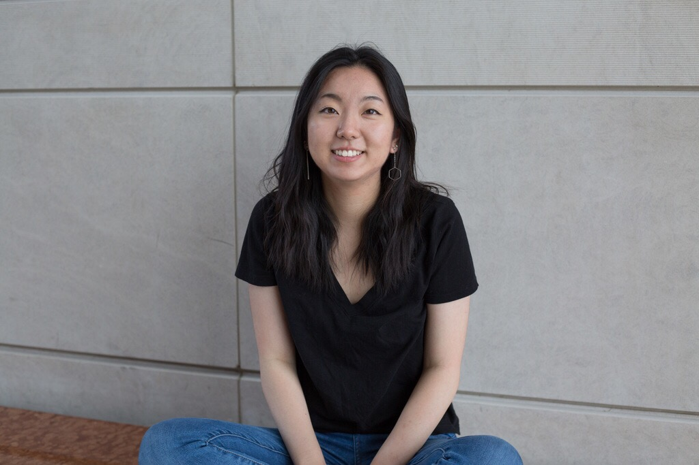

Currently, I'm a second-year at Northwestern University majoring in journalism, minoring in computer science
and getting a design certificate.
Like every journalism student ever, I tell people that I love telling stories. But more specifically,
I love how technology and multimedia can be used to make the process more compelling. I'm always looking for
ways to combine journalism and design to create more immersive and personable experiences.
Academics aside, I can never pass up a good piece of fried chicken, a challenging puzzle, or a fat nap.
Let's Chat!